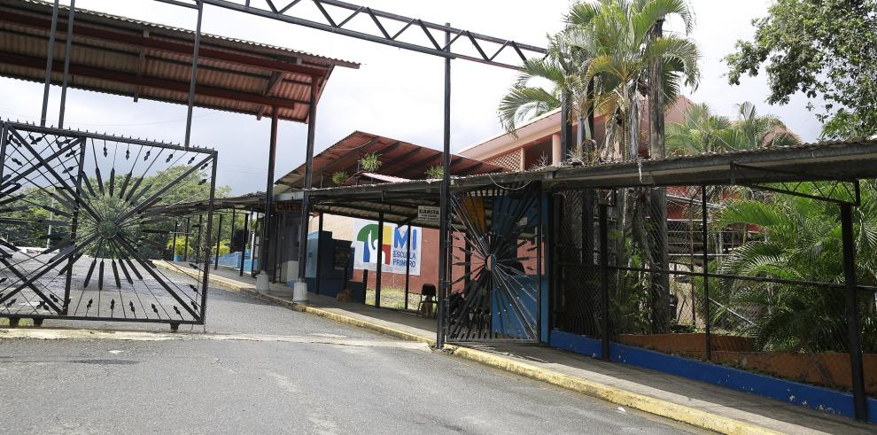

S
o
b
r
e
N
o
s
o
t
r
o
s
Sobre Nosotros / Historia
El Instituto Fermín Naudeau fue creado mediante el decreto de ley, del 29 de abril de 1958, siendo Ministro de Educación, el Ingeniero Víctor Nelson Juliao.

El Lema que identifica al Instituto Fermín Naudeau a los alumnos, ex-alumnos, docentes y administradores es “Disciplina, Honor y Saber”.
El Instituto Fermín Naudeau pone a disposición de todos sus estudiantes agrupaciones que ayudan a forjar el hombre y la mujer que Panamá necesita.


El Primer Director del Instituto Fermín Naudeau fue el Profesor Luis Oscar Miranda. EL Instituto Fermín Naudeau, desde su creación, ofrece a sus estudiantes el Bachillerato en Ciencias y, desde el ano 2000 también imparte el Bachillerato en Ciencias con énfasis en Informática.
El carácter experimental con que fue creado el Instituto Fermín Naudeau, en cuanto a métodos y programas educativos, hace posible que los alumnos egresados sean destacados intelectuales, hombres y mujeres de empresas, así como destacados colaboradores en Instituciones Públicas y Privadas. Es relevante la formación integral que reciben los estudiantes en este plantel, a través de diversos programas educativos y con el apoyo de importantes organizaciones.